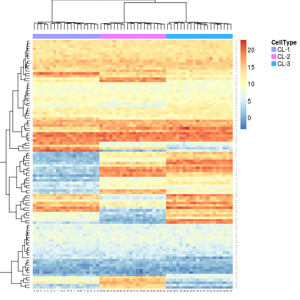
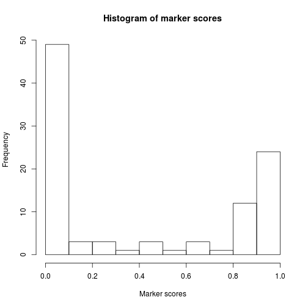
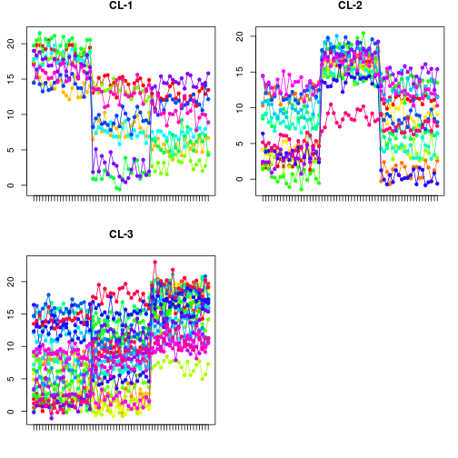

markerScoreHSD(object, data, log = !is_logscale(object), lbase = 2, verbose = FALSE)
S3 (markerScore_HSD)
`selectMarkers`(x, data, statistic = max, ...)
TRUE or
FALSE.matrix, an object of class
ExpressionSet, or a
MarkerList-class object.data,
by factor(data, levels=unique(data)). This is to
obtain levels in an order that is consistent with the
samples' order.
If object is a MarkerList object, then
data is generally a matrix-like object that
contains expression data.is_logscale.extractMarkers(..., format='raw'). The type of
x depends on the scoring method used to compute
it.extractMarkers and
selectMarkers, or that define default
arguments when defining a scoring method with
markerScoreMethod.This scoring method markerScoreHSD performs
pairwise comparison between groups of pure samples, and
scores each comparison using Tukey's Honest Significant
Difference p-values (see TukeyHSD).
The method selectMarkersmarkerScore_HSD selects,
within each cell type separately, the markers with the
lower aggregated p-value for Tukey's HSD. The default
aggregation method is to compute the maximum HSD p-value.
The scores are returned in a matrix, with features in rows and cell types in column, which contains the HSD p-values corresponding to the comparisons between the most expressing cell type and other cell types. Each row contains an NA value that identifies the column corresponding to the associated feature's most expressing cell type.
Features whose expression is not consistently higher in one cell type than in any other cell type are discarded.
# generate data from pure cell type samplesx <- rpure(3)xExpressionMix (storageMode: lockedEnvironment) assayData: 100 features, 60 samples element names: exprs protocolData: none phenoData sampleNames: 1 2 ... 60 (60 total) varLabels: CellType varMetadata: labelDescription featureData: none experimentData: use 'experimentData(object)' Annotation: Composition: (3 total)aheatmap(x, annCol=TRUE)
# extract markersml <- extractMarkers(x, x$CellType, method='HSD')# check score/p-value distributionhist(ml)
# plot most significant onesprofplot(ml[ml < 0.0001], x, split=TRUE)
TukeyHSD
Other markerScore: extractMarkers,
markerScoreAbbas,
markerScoreMaxcol,
markerScoreMethod,
markerScoreScorem,
scoreMarkers,
selectMarkers.markerScore_scorem